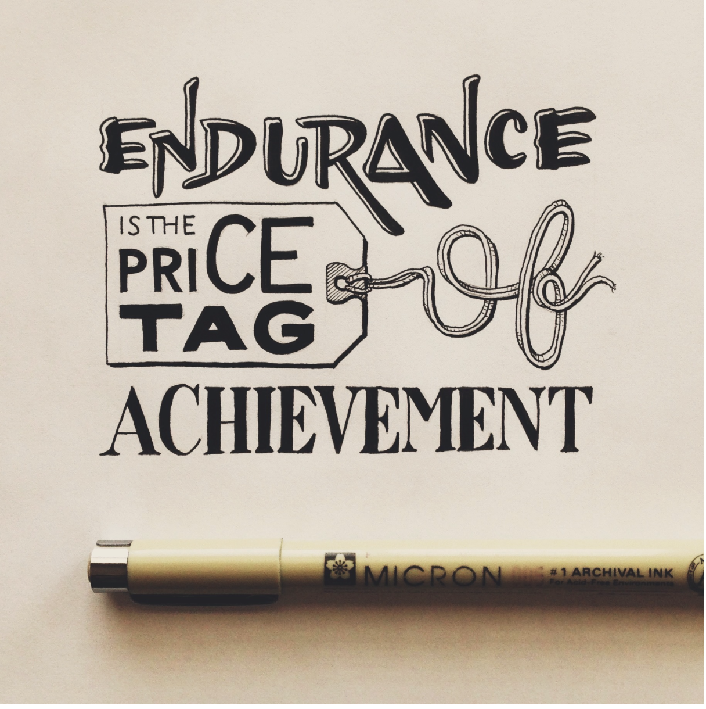

My important values
November 22, 2014
my importance values; Achivement,responsibility,loyalty
my most important value; Achievement It was not so many, but I certainly I have great moments in my life. To me, when I come to New York, I had three goals I have to achieve;Obtaining a B.B.A degree,green card and saving some money for my family. Every time when I get closer and the day I achieve it,I really admired and proud of myself. The only one thing I can say my friends and neighbors is that I have achieved several things while people inherited something. Sometimes, people may be sarcastic about my achievement because it is not so big and great. But I think that achieving something definitely make myself more can-do-person.

If I was born as a rich, my value could be different.
values in my life achievement 4 responsibility 4 loyalty 4
My advice to someone Someone asked for my advice was achievement. I already achieved somethings that people want to,she asked me how. I gave her some of my advice for an hour using Skype.Main point was I never gave up and tried to be loyal to my job. I was happy I could help her.
values and stereotype To me, I sometimes judge people from their appearance,but their race or gender. However, the way I judge people is how they have lived or what they achieved for their dream.It does not matter how much he or she is rich.Even you are so rich and everything is inherited, then I do not value the person, but if he or she is still struggling to achieve something for better future,I deeply value the person. I think it is fair to understand and figure the person fairly.